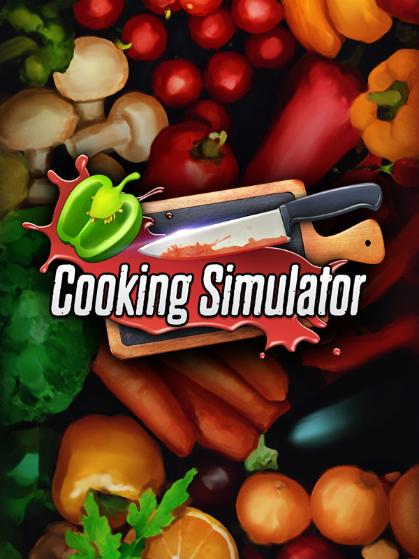

Cooking Simulator
Cooking Simulator
Details
|  | |
| Spielzeit | Nicht gespielt |
| Letzte Aktivität | Nie |
| Hinzugefügt | 11.05.2021 15:11:37 |
| Modifiziert | 10.11.2022 13:19:36 |
| Fertigstellungsstatus | Played (closed) |
| Bibliothek | Steam |
| Quelle | Steam |
| Plattform | PC (Windows) |
| Veröffentlichungsdatum | 06.06.2019 |
| Community Bewertungen | 81 |
| Kritiker Punkte | 64 |
| Benutzerwertung | |
| Genre | Simulation |
| Entwickler | Big Cheese Studio |
| Verleger | PlayWay S.A. |
| Eigenschaft | Achievements Cloud Saves Single Player Steam Karten |
| Links | Communityhub Diskussionen Guides Neuigkeiten Shopseite PCGamingWiki Errungenschaften |
| Tag | |
Beschreibung
More games
https://store.steampowered.com/app/1575660/Cooking_Simulator__Shelter/
https://store.steampowered.com/app/1123830/Farm_Manager_2021/
https://store.steampowered.com/app/1009560/The_Tenants/
About the Game

Become the ultimate chef! Take control of a highly polished, realistic kitchen equipped with all kinds of utensils and stands. Unlock and master over 80 recipes or use dozens of lifelike ingredients to cook everything you like. A simulator spiced up with a dash of real-life physics!
Key Features:
- Career and Sandbox modes
- 80+ recipes
- 140+ lifelike ingredients
- Perks and skills to unlock
- Advanced cooking mechanics
- Realistic physics

Your kitchen’s got all the gear a chef might need. Griddles, cookers, gas stands, ovens and tons of utensils like pots, pans, plates, knives, spatulas and blenders! On top of that there are over 140 ingredients available in the pantry: meat and fish, fruit and veggies, dairy products and various liquids. There’s also a full set of spices and herbs for adding that extra flavour!

Lifelike cooking experience! All the ingredients respond to your actions by changing temperature, appearance and taste. Every time you’re slicing potatoes, flipping steaks or boiling a soup, there are some real-life physics applied to it. Once you learn the cooking mechanics and start serving dishes, you’ll see yourself becoming a better chef with every new plate on the checkout.

Career mode is a culinary journey zero-to-hero style and your task is to gain fame for you and your restaurant. You’ll start from the basics and progressively unlock new more complex dishes and start serving more customers as your fame and experience grow. Once you master the recipes and workflow, you’ll be able to unlock various perks and skills.

However, if you’re not interested in playing by the rules, you’re going to love the Sandbox mode. Access all the recipes and ingredients and prepare whatever you like without any pressure. You don’t even have to cook anything! Game physics gives you unlimited opportunities. Throw knives like darts, set up cutting boards like dominoes, set the whole kitchen on fire, blow up the oven and save the day using a fire extinguisher!